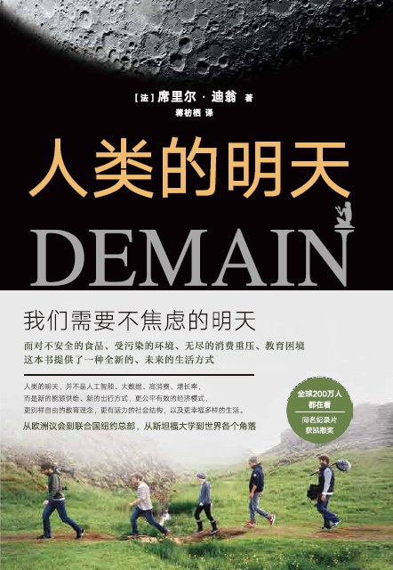

人类的明天¶
注解
我们需要不焦虑的明天
简介¶
如果把地球史按比例缩至24 小时，那么人类就只存在了短短2分钟。而工业革命以来的历史不到1毫秒。但就是在这微乎其微的1毫秒中：
塑料垃圾在太平洋聚起触目惊心的“第七大陆”；
半数野生物种灭绝；石油只够用40年了；
大都市像八爪鱼一样扩张，人与自己赖以生存的大自然疏远、决裂，越来越孤独；
如果所有人都想过美国人那样的生活，那我们需要7个地球;
6个年轻人，历时5年，遍访世界…
人类的明天，并不是人工智能、大数据、高消费、增长率，而是新的能源供给、新的出行方式，更公平有效的经济模式，更符合个体成长规律的教育理念，更有活力的社会结构，以及更幸福多元的生活。
你知道电子邮件的污染度比纸信高15-23倍吗？
你知道你也可以很容易地实现“负瓦特”生活吗？
高消费社会究竟给我们设下了什么样的陷阱？
在印度，修建厕所这件事究竟有多重要？
“芬兰教育”何以成为西方教育的典范？
地球真的能养活100亿人吗？
翻开《人类的明天》，你将发现，要摆脱焦虑，让生活重新变得自由而有趣，不但可以实现，而且远比你想象的更简单。
《人类的明天》
作者: [法] 席里尔·迪翁（译者: 蒋枋栖）
出版社: 北京联合出版公司
出版年: 2018-8
目录¶
引言
出发
斯坦福大学：震颤背后
与伊丽莎白•海德利和安东尼•巴诺斯基的会面23与勒斯特•布朗的会面
一、明天的食物
（一）昨日历史：与奥利维耶•德舒特的会面
（二）让生产回归本土：都市农业探险
（三）别样的生产方式：朴门永续农业的奇迹
（四）农业新篇章
二、明天的能源
（一）昨日历史：与提耶里•萨洛蒙的会面
（二）可再生的岛屿
（三）哥本哈根：首个二氧化碳排放达到碳平衡的首都
（四）马尔默：未来的生态街区
（五）与扬•盖尔的会面
（六）没有垃圾的城市：旧金山的史诗
三、明天的经济
（一）昨日历史：与皮埃尔•拉比的会面
（二）珀西口：环保型生产模式更节约成本
（三）货币：从单一到多样化
（四）本地优先！
（五）修理、重复使用、自己制作：Makers运动
（六）走向分散型的共享经济：与杰里米•里夫金的会面
四、明天的社会
（一）昨日历史：与大卫•凡瑞布鲁克的会面
（二）冰岛革命：公民反对金融 ,历史上第一部众包宪法
（三）库坦巴干村：公民自治
（四）与凡达娜•希娃的会面：遵从最高法则
五、明天的教育
（一）昨日历史
（二）每个学生都重要：芬兰的教育
六、从今天开始！
与罗伯•霍普金斯会面
结语
致谢